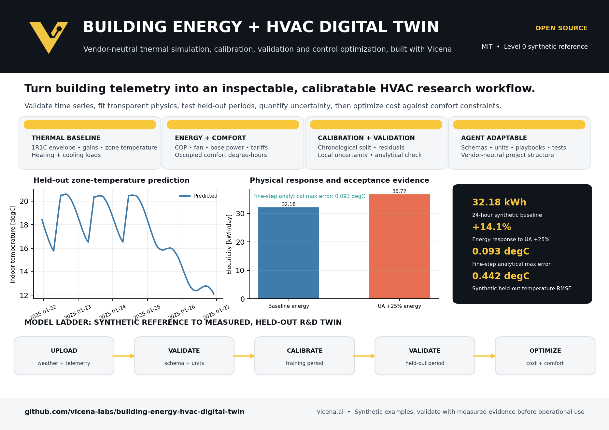

Transparent physics
Inspect the single-zone 1R1C balance, gains, ideal loads, COP, fan power, interval energy, cost, and comfort.
Calibratable
Fit bounded parameters on a declared chronological training period and report approximate local uncertainty.
Validation first
Run held-out metrics, residual diagnostics, analytical convergence, physical response, and invalid-input gates.
Research extensible
Upload documented weather, occupancy, temperature, meter, equipment-status, price, and setpoint series.
Completed synthetic reference answer
Quickstart
git clone https://github.com/vicena-labs/building-energy-hvac-digital-twin.git
cd building-energy-hvac-digital-twin
python -m pip install -e .
python scripts/run_reference_cases.py
hvac-twin run datasets/example/building_timeseries.csv --output outputs/reference_run
Scientific status and limitations
This is a Level 0 executable synthetic reference and a framework for a calibratable R&D twin. It is not production-ready. Major limits include one well-mixed zone, idealized control, constant COP, simplified occupancy and solar gains, no humidity or ventilation physics, and no measured multi-season validation.
Citation, license, and agent use
Use CITATION.cff. Repository code and documentation are MIT licensed. External data retain their own licenses.
Clone https://github.com/vicena-labs/building-energy-hvac-digital-twin.git. Read AGENTS.md, AGENT_PLAYBOOK.md, RUNS.md, and the repository skill. Run tests and the reference cases before scientific changes. Report what is synthetic and what measured data are required. Do not infer missing units or metadata.